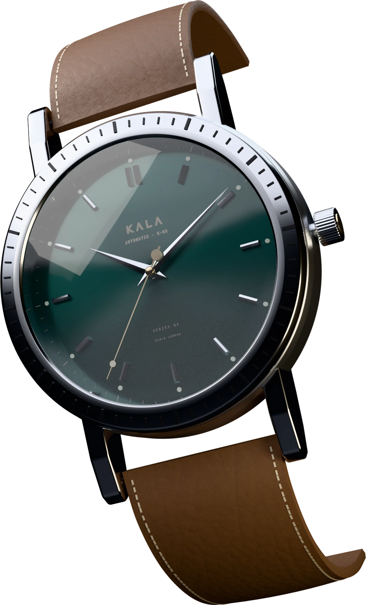

KALA
WATCHWORKS
FIG. 01 · K-303 KALA TIGA
SERIES 03 · 088 PIECES
SERIES 03 · HAND-ASSEMBLED IN KUALA LUMPUR
Every second,
made by hand.
A cinematic launch site for a fictional watchmaker: real-time 3D, scroll choreography and a live configurator.
ANGULAR 22
THREE.JS
BLENDER
GSAP